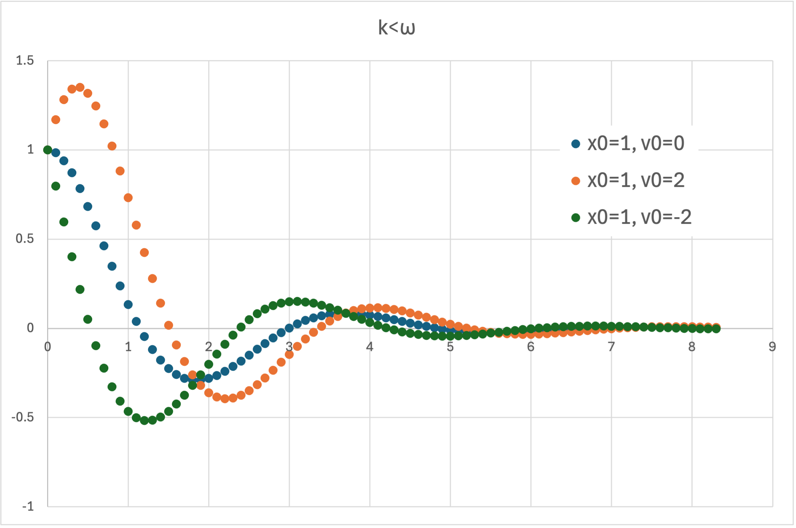
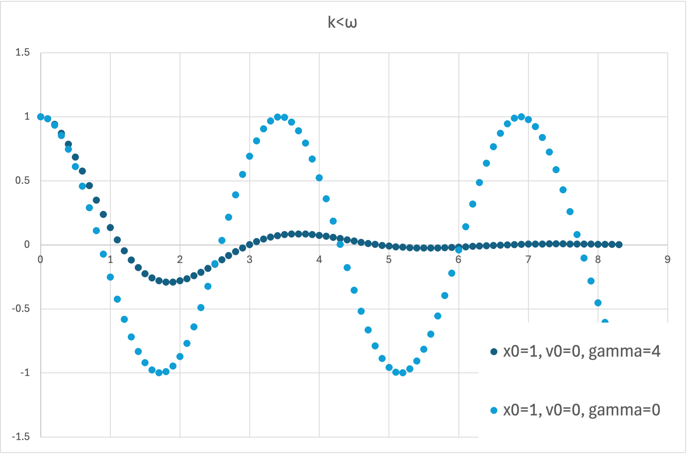

ラプラス変換_運動方程式 - k<ω
・ k < ω
\( \Large \displaystyle F(s) =\frac{ s \ f(0) + f'(0) + 2k \ f(0)}{s^2 + 2ks+ \omega^2 } \)
分母に着目すると，分母＝０の場合の解は
\( \Large \displaystyle s^2 + 2ks+ \omega^2 = 0 \)
\( \Large \displaystyle s = \frac{-2k \pm \sqrt{4k^2 -4 \omega^2 }}{2}
= - k \pm
\sqrt{k^2 - \omega^2} \)
ですが，k<ω，の場合，平方根内がマイナスとなるので，虚数となります．
その解は，
\( \Large \displaystyle s = - k \pm i \ \sqrt{ \omega^2 - k^2} \)
となるので，
\( \Large \displaystyle F(s) =\frac{ s \ f(0) + f'(0) + 2k \ f(0)}{(s+ k + i \ \sqrt{ \omega^2 - k^2})(s+ k - i \ \sqrt{ \omega^2 - k^2}) } \)
\( \Large \displaystyle =\frac{ s \ f(0) + f'(0) + 2k \ f(0)}{(s+ k)^2 + ( \sqrt{\omega^2 - k^2})^2} \)
\( \Large \displaystyle =\frac{ (s+k) \ f(0) + f'(0) + k \ f(0)}{(s+ k)^2 + ( \sqrt{\omega^2 - k^2})^2} \)
\( \Large \displaystyle =\frac{ (s+k) \ f(0) }{(s+ k)^2 +
( \sqrt{\omega^2 - k^2})^2}
+
\frac{ f'(0) + k \ f(0)}{(s+ k)^2 +
( \sqrt{\omega^2 - k^2})^2} \)
\( \Large \displaystyle =\frac{ (s+k) \ f(0) }{(s+ k)^2 +
( \sqrt{\omega^2 - k^2})^2}
+
\frac{ f'(0) + k \ f(0)}{ \sqrt{\omega^2 - k^2}}
\frac{ \sqrt{\omega^2 - k^2}}{(s+ k)^2 +
( \sqrt{\omega^2 - k^2})^2} \)
\( \Large \color{red}{\mathfrak{ L} \{ e^{-at} \sin \ \omega t \}
= \displaystyle \frac{\omega }{(s+a)^2+ \omega^2}} \)
\( \Large \color{red}{\mathfrak{ L} \{ e^{-at} \cos \ \omega t \}
= \displaystyle \frac{s+a }{(s+a)^2+ \omega^2}} \)
を使って，逆ラプラス変換を行うと，
\( \Large \displaystyle F(s) = f(0) \ e^{-kt} \ cos \sqrt{ \omega^2 - k^2} t
+ \frac{ f'(0) + k \ f(0)}{ \sqrt{\omega^2 - k^2}} \ e^{-kt} \ sin
\sqrt{ \omega^2 - k^2} t \)
\( \Large \displaystyle = \left[ f(0) \ cos \sqrt{ \omega^2 - k^2} t
+ \frac{ f'(0) + k \ f(0)}{ \sqrt{\omega^2 - k^2}} \ sin
\sqrt{ \omega^2 - k^2} t \right] \ e^{-kt}\)
となり，三角関数と指数関数との積なので，振動しながら減衰する運動となります．
図示すると，

のように，特に初期速度をプラスにするのかマイナスにするのかによってによって振る舞いが変わりますが，振動しながら振動することに変わりありません．
これを，減衰減衰，と呼ぶようです．
粘性抵抗係数が０の場合は減衰せず，単振動となります
